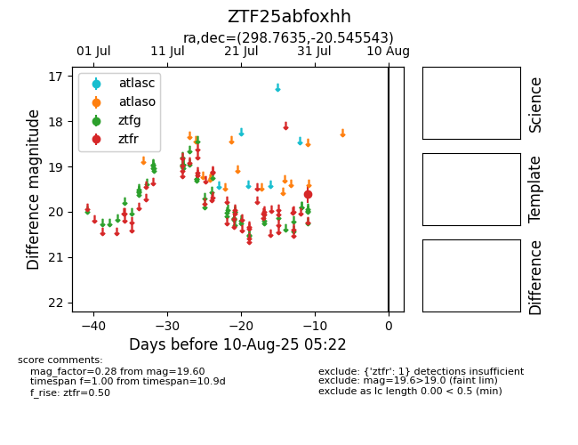

Target ZTF25abfoxhh at 2025-08-10 05:22, see:
FINK: fink-portal.org/ZTF25abfoxhh
Lasair: lasair-ztf.lsst.ac.uk/objects/ZTF25abfoxhh
ALeRCE: alerce.online/object/ZTF25abfoxhh
alt names
ZTF25abfoxhh (ztf,fink)
coordinates:
equatorial (ra, dec) = (298.7635,-20.54554)
galactic (l, b) = (20.6935,-22.85477)
photometry
last ztfr=19.60
1 ztfr detections
